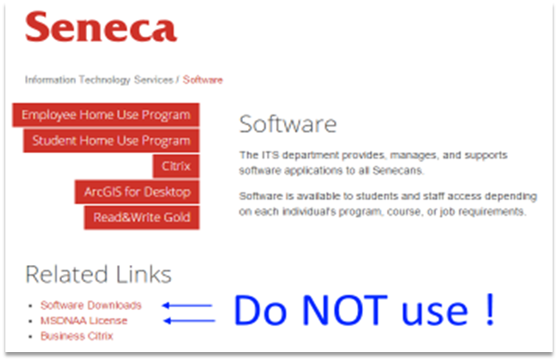
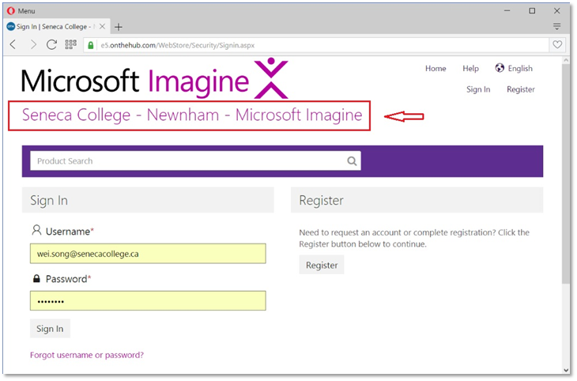
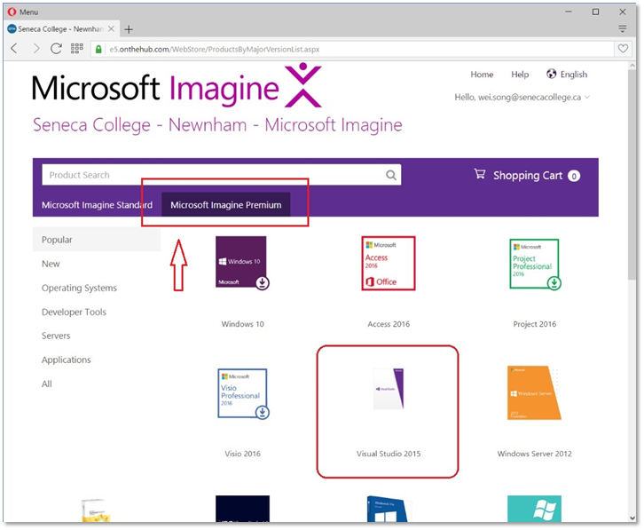
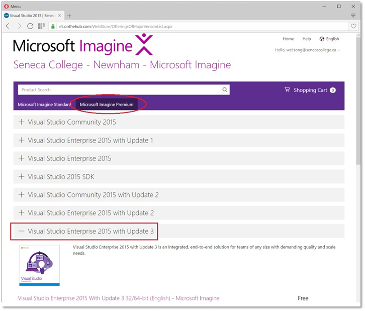
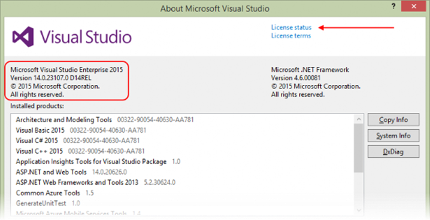

Using the Microsoft Imagine WebStore to get Software
This document discusses the Microsoft Imagine WebStore, in the context of web app and web service development.
This document was updated on September 1, 2016.
What is Microsoft Imagine?
From the “what is Microsoft Imagine?” page:
Microsoft Imagine connects students with the tools, resources and experiences they need to elevate their skills for today's working world. Microsoft Imagine provides developer tools and software for students at no cost.
As a Seneca student, in the School of ICT, you have access to the Microsoft software you need for development and testing, including Visual Studio, SQL Server, Windows Server, and Windows client.
Microsoft Imagine replaces the “Software Downloads” and “MSDNAA License” schemes that were used in the past.

To get software, sign in to our school-specific Microsoft Imagine WebStore, described next.
.
Sign In to the Microsoft Imagine WebStore
You should receive an email from “Seneca College - Newnham - Microsoft Imagine noreply@kivuto.com” to lead you register to the Microsoft Imagine webstore with your Seneca learn account. Note: the email may be quarantined or in your Junk E-mail folder.
If you have registered already, follow this link to our school-specific sign in page.
Before continuing, ensure that the WebStore name is “Seneca College – Newnham – Microsoft Imagine”.

If you have credentials, sign in.
If not, then you should have received an email invitation to “complete your registration” from Microsoft Imagine (on domain e5.onthehub.com). Respond to that, and you will be able to create credentials.
If you have not received an invitation, then send an email to servicedesk@senecacollege.ca, and request access to the Microsoft Imagine Premium WebStore. Identify yourself as a School of ICT student. The IT Services technician (probably Ravi) will verify your eligibility, and generate the invitation email.
After sign in, choose to view the items in the “Microsoft Imagine Premium” WebStore. The center panel will show a product selector. We will be interested in Visual Studio 2015. (Click the image to open it full-size in its own tab/window.)

Select the Visual Studio 2015 item, and it will display a list of products in that category.
Your professor recommends the “Enterprise” version. It includes CodeLens, which is really helpful.

.
Continue the process to select, “checkout”, and download the product. During “checkout”, it will display your own unique product key, which you must enter after installation.
The item will be downloaded as an ISO image. Your computer will need software to “mount” the ISO image, so that you can install the software. (Maybe your computer already has this kind of software. If not, your professor has used a product named Virtual CloneDrive in the past, and has been satisfied with it.)
After installation, start Visual Studio, and open the Help > About Microsoft Visual Studio dialog.
The left side will tell you which version is installed. The “REL” string in the version number tells you that this is the original release version. You should anticipate that future updates will modify that string.
In the upper-right area, there is a link to “License status”. Follow that link, and enter your own unique product key.

.